OS 更新プログラム適用失敗時の初期調査の際、弊社では初期資料採取のため、TSS による資料採取をお願いさせていただいておりますが、
お客様によっては、エンドユーザー様に管理者権限がないなどの理由で採取が出来ない場合がある旨、伺っております。
本手順では、ConfigMgr のスクリプト機能を用いることでシステム管理者権限を用いた TSS の実行をリモートで実行する方法をご案内いたします。
スクリプト機能については下記ご案内記事もご参照ください。
スクリプト機能のご紹介
https://jpmem.github.io/blog/mecm/20211025_01/
本スクリプトは サンプル スクリプトとしての提供とします。弊社環境で検証した上でご案内しておりますが、弊社にてその動作を保証するものではございません。
ご使用の際は、お客様の環境に合わせて変更いただき、十分にテストした上で、ご利用くださいますようお願いいたします。
本スクリプト実施に当たっては、エンドユーザー様により、TSS のエンドユーザー 使用許諾契約書 (EULA) について同意いただけているものとします。EULA については以下より参照可能です。
本スクリプト実施に当たっては、各クライアントがスクリプト機能を実行できるだけでなく、以下の URL に アクセスできる必要があります。 なお、Invoke-WebRequest コマンドレットを利用しているため、デフォルトでは WinInet Proxy が接続に利用されます。アクセスできない場合は後述するスクリプトの Invoke-WebRequest コマンドレット呼び出し部分にて Proxy 周りのオプションを追加ください。
本スクリプトでは一時的に以下のデータ領域を用いたり、作成します。
スクリプト実行後、C:\MS_DATA フォルダに採取した資料のフォルダが生成されます。エンド ユーザー 様に手動で該当フォルダをアーカイブしていただく必要がございます。
リモートでの実行中、対象のクライアントのリソースを幾分か消費します。エンド ユーザー様の利用にある程度影響が考えられますので、事前に調整の上、実施いただくことを推奨します。
(1) スクリプトの登録 -> (2) スクリプトの承認 -> (3) デバイスを選択してスクリプトを実行 と進みます。一旦登録、承認した後は (3) だけを実行すれば OK です。
[ConfigMgr コンソール] - [ソフトウェア ライブラリ] - [概要] - [スクリプト] を開きます。
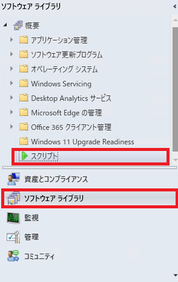
[スクリプトの作成] を選択します。
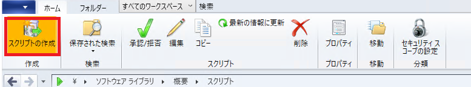
[スクリプトの作成] ウィザードが開きます。以下のように入力した後、[次へ]をクリックします。
スクリプト名: 適宜入力
スクリプトの説明: 適宜入力
スクリプト言語: PowerShell を選択
スクリプトのタイムアウト秒数: 1800 秒以上を入力
スクリプト: 以下のスクリプトを貼り付け
1 | # Config |
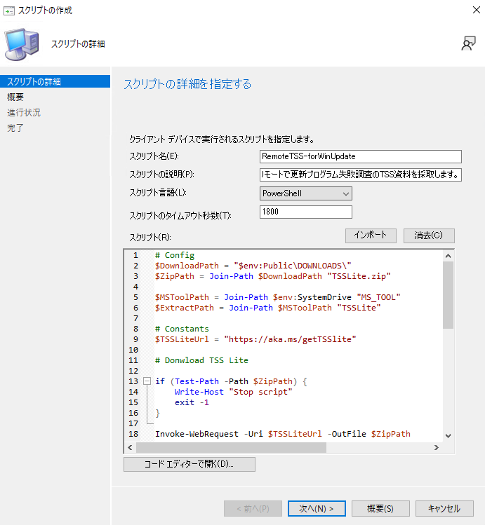
[詳細を確認する] ステップで画面確認し、[次へ] をクリックします。
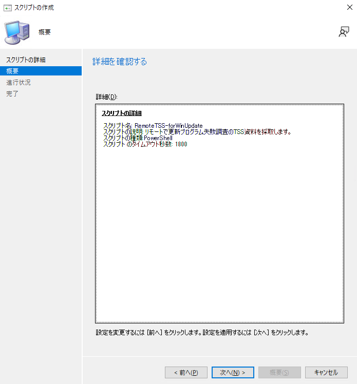
完了したら、「閉じる」をクリックします。
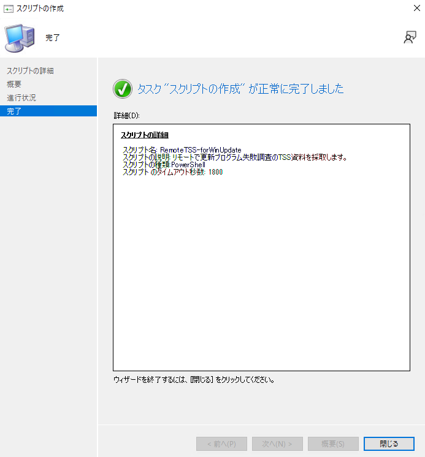
[ConfigMgr コンソール] - [ソフトウェア ライブラリ] - [概要] - [スクリプト] を開きます。
作成したスクリプトを右クリックし、「承認/拒否」を選択します。
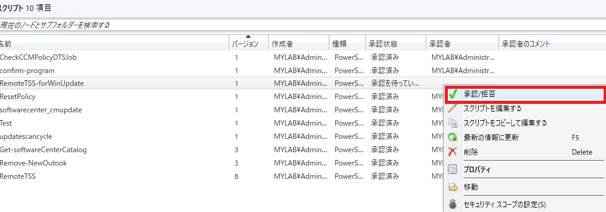
[スクリプトの詳細] ウィザードが開きます。内容を確認して、「次へ」をクリックします。
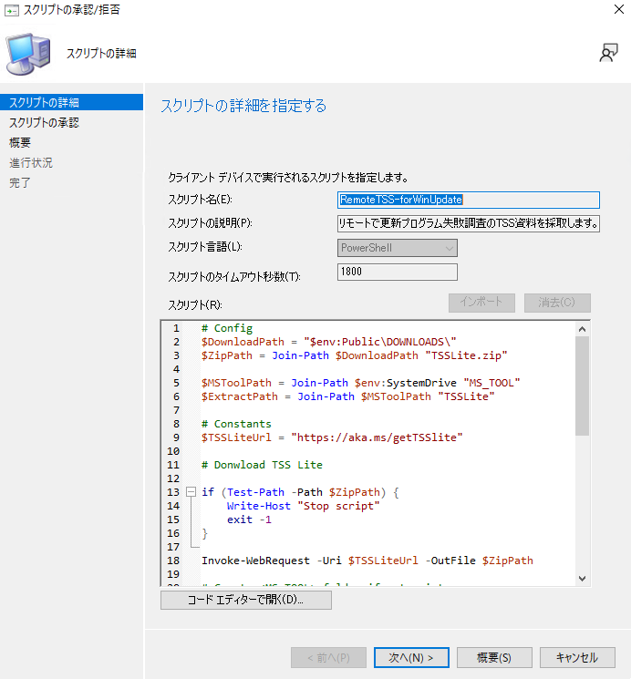
適宜コメントを記入して、「承認」を選択し、「次へ」をクリックします。
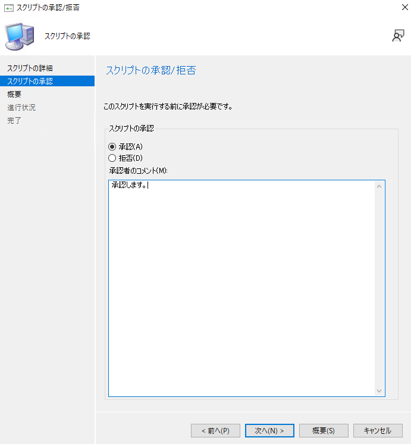
設定内容を確認し、「次へ」をクリックします。
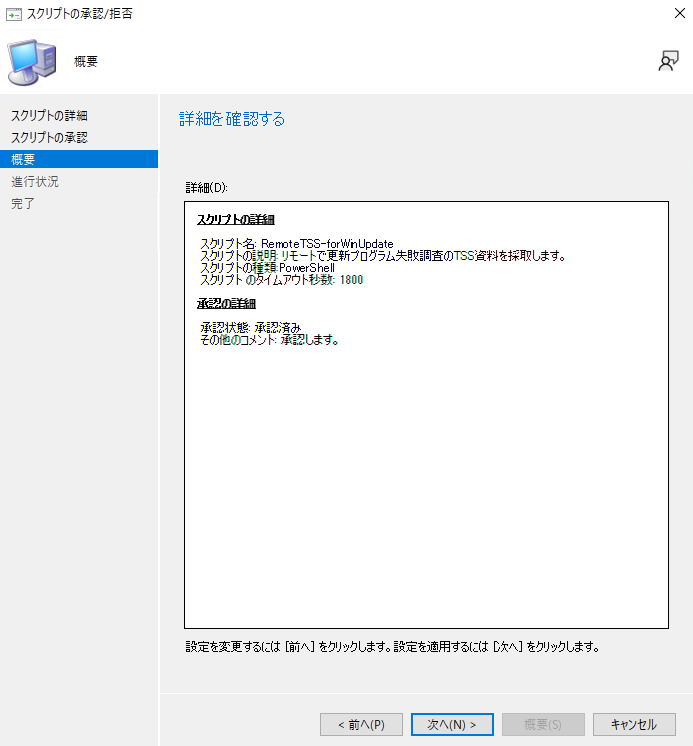
完了画面が表示されたら、「閉じる」をクリックします。
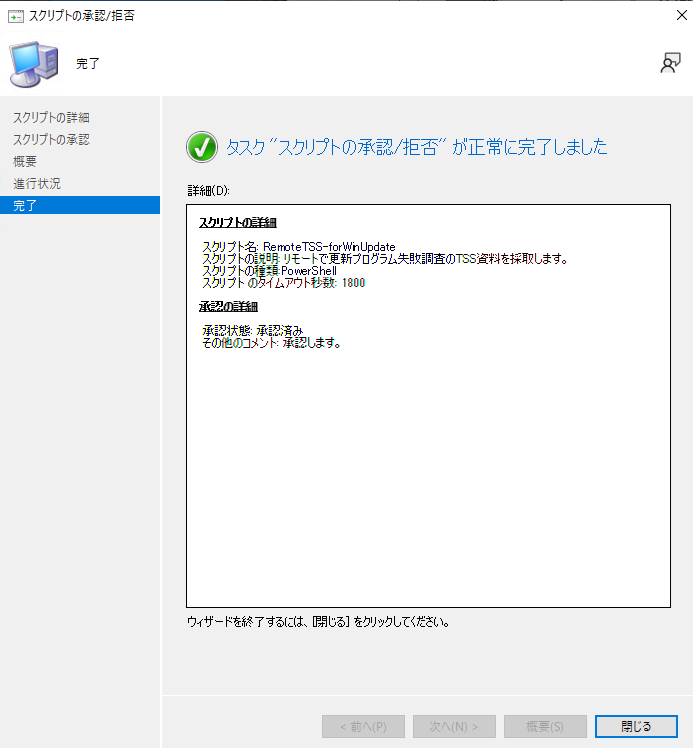
登録したスクリプトを TSS 資料採取したいデバイスで実行します。
[ConfigMgr コンソール] - [資産とコンプライアンス] - [概要] - [デバイス] より、対象のデバイスを選択します。
対象のデバイスのアイコンに緑色のチェックがついていて、デバイスがオンライン状態であることを確認します。
デバイスのレコードを右クリックし、[スクリプトの実行]を選択します。
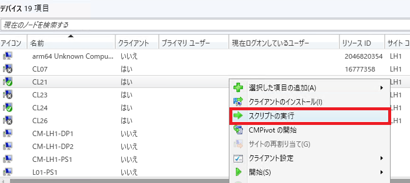
[スクリプトの実行]ウィザードが開きます。作成したスクリプトを選択して、「次へ」をクリックします。
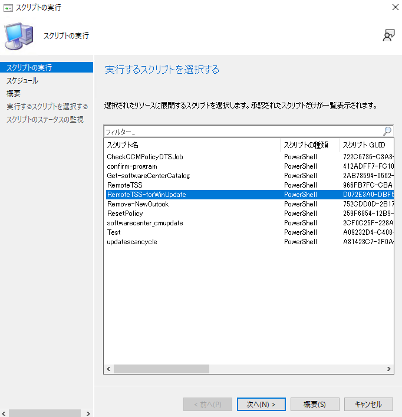
[スケジュール]ステップになります。即時実行する場合は、「次へ」をクリックします。エンドユーザー様と調整し、スクリプトの実行時間を決めている場合は、「スクリプトの実行をスケジュールする時間」にチェック、時間を指定して「次へ」を選択します。
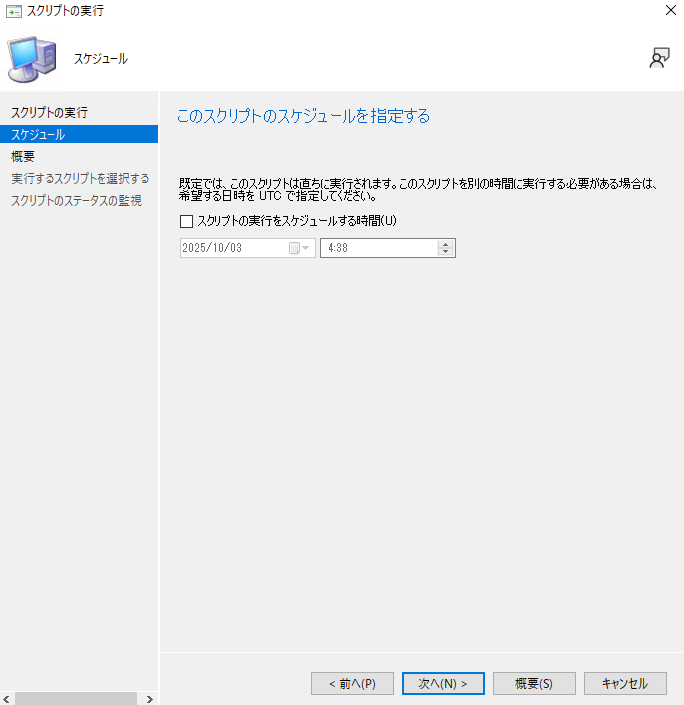
概要ステップを確認します。「次へ」をクリックします。
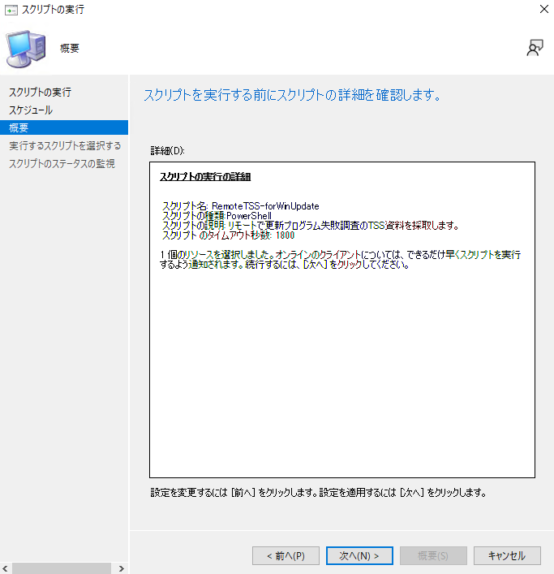
スクリプトが実行されます。
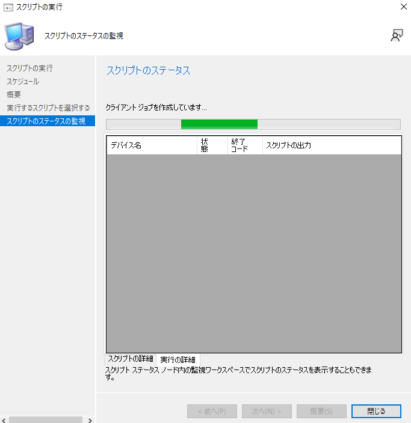
スクリプトが完了するまで 15 - 20 分程度待ちます。
完了すると、以下の通り画面が遷移されますので「閉じる」をクリックします。
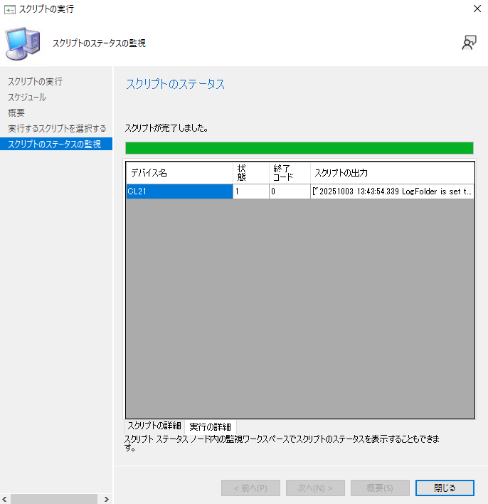
対象端末の C:\MS_DATA フォルダに資料が収集されているので、アーカイブして弊社までご提供ください。
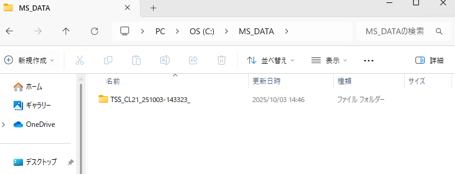